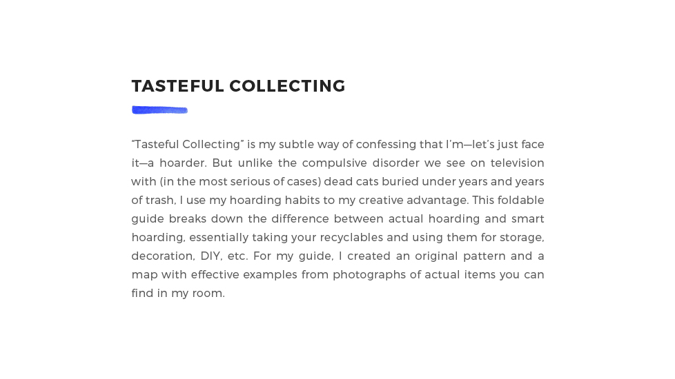
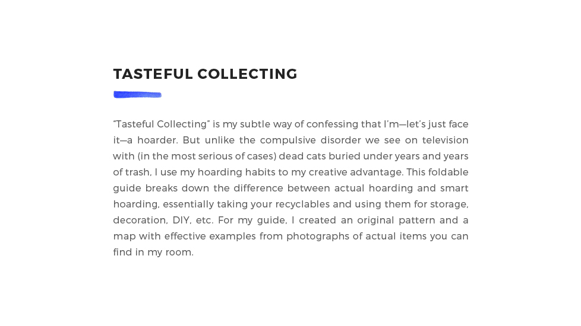

“Tasteful Collecting” is my subtle way of confessing that I’m—let’s just face it—a hoarder. But unlike the compulsive disorder we see on television with (in the most serious of cases) dead cats buried under years and years of trash, I use my hoarding habits to my creative advantage. This foldable guide breaks down the difference between actual hoarding and smart hoarding, essentially taking your recyclables and using them for storage, decoration, DIY, etc. For my guide, I created an original pattern and a map with effective examples from photographs of actual items you can find in my room.